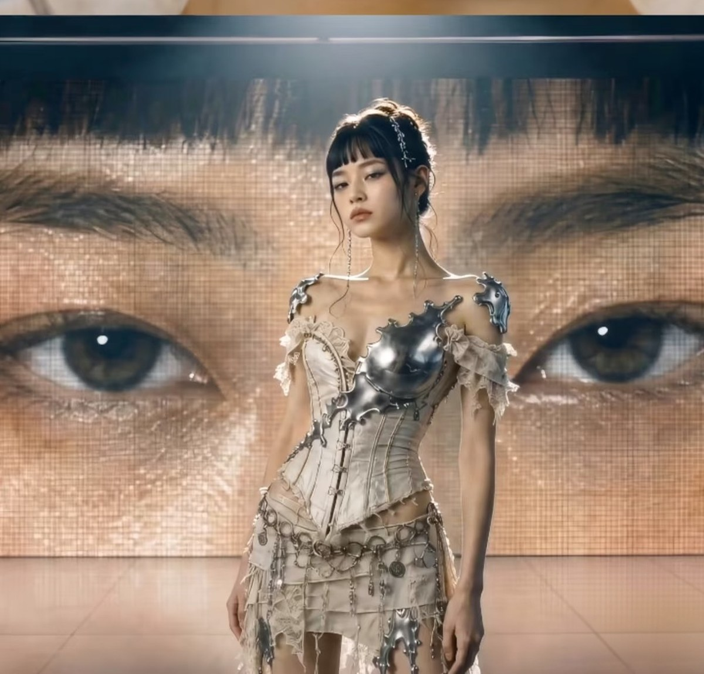
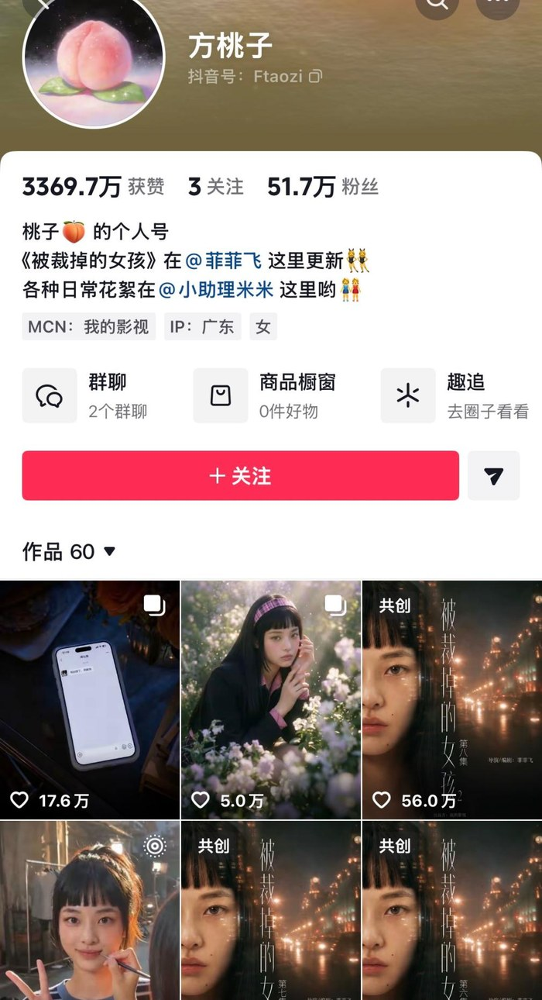
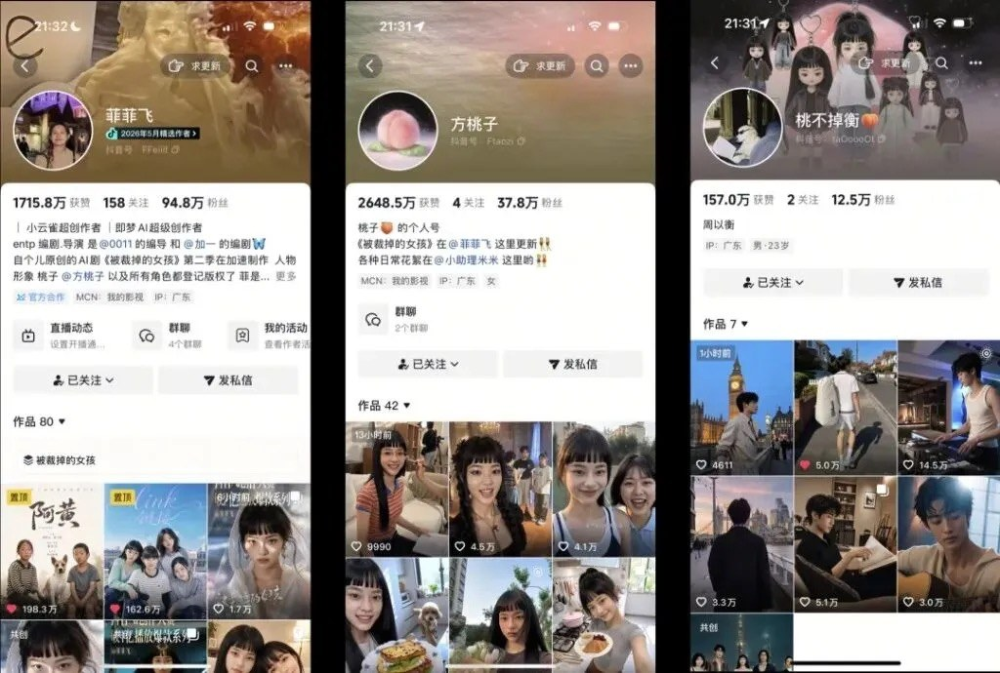

The campaign looked like any other creator collaboration. The question appeared later: when the character has no body, who carries the consequences?
CASE FILE001
01 / CAMPAIGN PUBLISHED
A polished partnership goes live.
Audience attention gathers around the character, the product and the story.
02 / REACTION
Questions move from the product to the persona.
What looks personal is also a commercial communication.
03 / CONTROVERSY
The familiar “creator” model starts to break.
There is no individual creator visibly standing in front of the camera.
04 / THE GAP
Responsibility becomes harder to locate.
Character, creative team, brand and platform all participate in the ecosystem.
THE QUESTION
If a virtual influencer can receive human-scale attention and commercial value, who should carry human-scale responsibility?
CHARACTER→CREATIVE TEAM→BRAND→PLATFORM
EXHIBITS / CASE 001SOURCE: PUBLIC POSTS & PRESS COVERAGE
EXHIBIT A — THE SPONSORED POST“The lenses felt comfortable all day.” The post was taken down within a week. The product is a Class III medical device, which cannot legally be recommended by an endorser.

EXHIBIT B — THE CAMPAIGNStudio-grade campaign visuals, produced with no camera, no set and nobody standing in front of one.

EXHIBIT C — THE ACCOUNTFollowers and likes are counted in the millions — the same numbers used to price a human creator.
Every “spontaneous” moment has a production history.
TAOZI the persona
CONTENT the output
CREATIVE TEAM the authorship
HUMAN LABOUR the hidden foundation

THREE ACCOUNTS, ONE PRODUCTION — the creator's account, the character's account and the co-star's account. The persona collects the fame and the commercial value; the names behind the production stay at the edge of the frame: writers, prompt engineers, editors, community managers, often under NDA. THE PERSONA IS VIRTUAL. THE LABOUR IS NOT.